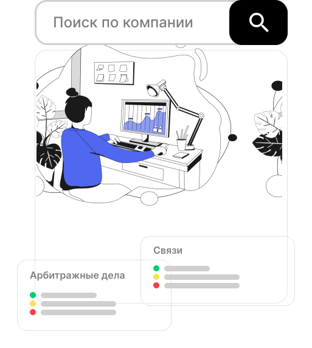

Проверка контрагента
по ЗСК через Telegram
Проверим компанию, физлицо и ИП по ИНН на платформе «Знай своего клиента».
Предоставим информацию о более 15 миллионах российских и зарубежных организаций.
Сформируем экспресс-отчет с оценкой рисков сотрудничества и аналитику, исходя из задач вашего бизнеса.
